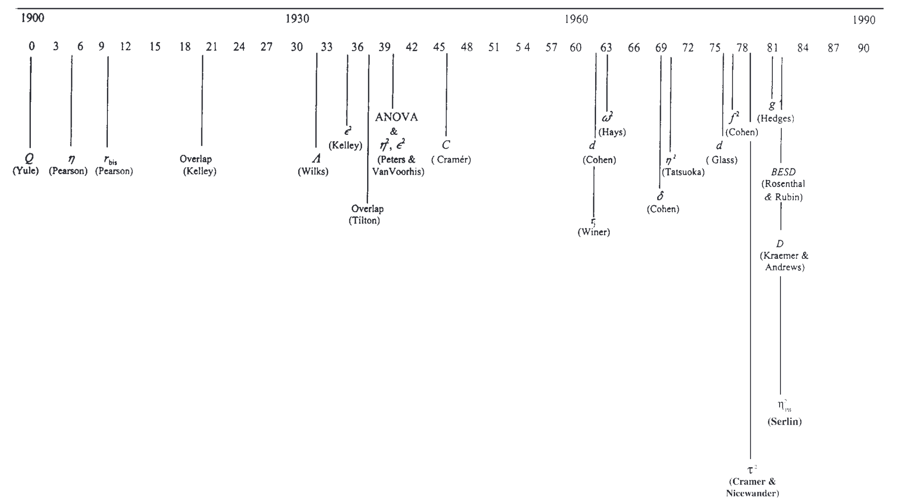

効果量に関するまとめ
2022-07-06
chapter: 1 イントロダクション
1.1 ドキュメントの概要
本ドキュメントの目的は、効果量（effect size）の理論と計算法に関する基礎的な内容をまとめることにある。 具体的には、効果量の定義、種類、Rによる計算法、解釈、統合の方法などを扱う。
近年、多くの研究スタンダードが帰無仮説検定の結果としてp値だけでなく効果量とその信頼区間を報告することを求めている(e.g., APA, 2019, p. 89)。 しかしながら、効果量に関して網羅的にまとめられた日本語の無料ドキュメントが管見の限り無かったため、本ドキュメントの作成に至った。 著者は統計の専門家ではないため、読者自身で内容の正しさを確認しながら読み進めていただきたい。
1.2 効果量とは何か
効果量の記載を推奨する文献が多く存在する一方で、効果量の定義について述べた文献は驚くほど少ない(Dragicevic, 2020)。それでも数少ない例をあたれば、効果量に関する初期の定義は、効果量という言葉を広めた Jacob Cohen の1977年の著作に見ることができる。
The “effect size,” that is, the degree to which the phenomenon exists. (Cohen, 1977 , p.4)
この記述から、Cohen自身は効果量をある現象が存在する程度を表す量として捉えていたことが読み取れる。この表現の意味を正確に理解するためには、Neyman-Pearson流の統計的帰無仮説検定（ Null Hypothesis Significance Testing, NHST）の枠組みを考える必要がある。 NHSTの枠組みにおいて、帰無仮説はある現象が存在しない状態を表す仮説、対立仮説はある現象が存在する状態を表す仮説として設定されることが多い。 例えば、ある病気の発症率の性差を検討する場合、性別間で発症率に差がないという帰無仮説は、発症率の性差という現象が存在しないという状態を表現している。 他方で対立仮説は現象が存在する状態を表し、その強度が効果量として量的に表現されるのである。別の言い方をすれば、効果量は「帰無仮説が偽である程度」も意味する(Cohen, 1977, pp. 9–10)。
効果量の定義に言及した最近の文献では、「効果量とは単に研究者が関心を持つ事柄の大きさである（原文：An effect size is simply the size of anything that may be of interest.）」とされている(Cumming, 2012, p. 34)。Cohenの定義と異なり、現象の実在性を問題とせず研究者が関心を持つ対象の大きさとして扱っている点や、NHSTの枠組みに依存していない点が特徴的である。何を関心の対象とするかは研究者が自由に決めることができる。
これらの効果量の定義は広義の効果量と呼ばれ、狭義の効果量の定義とは区別されることがある。効果量には測定単位に依存しない形で表現される標準化効果量（e.g., Cohen’s d）と、測定単位に依存する非標準化効果量（e.g., 平均値差）の2種類が存在する。広義の効果量の定義が両者を効果量に含めるのに対して、狭義の効果量の定義では標準化効果量のみを効果量として扱う。一部の文献では狭義の効果量の定義のみを効果量の定義として記載している(Everitt & Skrondal, 2010; Ialongo, 2016)。この背景には、標準化効果量の方が研究間で比較しやすいという考えがあると推察される。Ives (2003) は理想的な効果量の特徴として、次の3点を挙げている。
- 結果の実質的な有意性を測るものである
- 標本サイズに依存しない
- 測定単位に依存しない
このうち、3番目の特徴は標準化効果量のみが持つ性質だが、測定単位に依存しない（metric free）という性質は研究間に比較・統合の容易性や、検定力を分析する際の利便性などから重宝される。しかしながら、元の測定単位に意味のある状況では、標準化効果量より非標準化効果量の方が好まれることもある(Wilkinson, 1999, p. 599)。また、複数の標本統計量を用いて算出される標準化効果量は、単一の標本統計量を用いて算出される非標準化効果量と比べて不確実性が増加するという理由で使用に反対する意見も存在する(Cummings, 2011)。 よって、どちらか一方に限定せず、両方の種類を適宜使用することが望ましいと考えられる。
Jacob Cohen 以降の効果量の定義についてレビューした Preacher and Kelley は、広義の定義が最も有用であると結論付けた上で、効果量を以下のように定義している。
We define effect size as any measure that reflects a quantity of interest, either in an absolute sense or as compared with some specified value. […] Although standardized effect sizes can be valuable, they are not always to be preferred over an effect size that is wedded to the original measurement scale, which may already be expressed in meaningful units that appropriately address the question of interest. (Preacher & Kelley, 2011 , p.95)
（著者訳）効果量とは、絶対的な意味で、あるいはある特定の値と比較して、関心のある量を反映するあらゆる尺度であると定義する。（中略）標準化された効果量は有用であるが、非標準化効果量よりも常に優先されるとは限らず、興味のある問題に適切に対応する意味のある単位で既に表現されている場合もある。
以上より、効果量の定義としては広義の定義を採用することが妥当だと考えられ、本ドキュメントも非標準化効果量と標準化効果量の両方を効果量として扱う。
なお、非標準化効果量という表現は標準化効果量の劣化版という誤った印象を与える可能性があることから、単純効果量（simple effect size）という表現を用いるべきだという主張も存在するが(e.g., Baguley, 2009, p. 239)、このような表現は少なくとも日本語圏ではあまり普及していないことから、本ドキュメントでは採用しない。
効果量の定義に関するその他の議論については、Dragicevic (2020) や Kelley & Preacher (2012) などを参照されたい。
1.3 効果量を利用するメリット
効果量を利用することのメリットとして、Lakens (2013) は次の3点を挙げている。
- 効果の大きさを示すことができる
- 研究間で効果の大きさを比較・統合することができる
- 過去の研究の効果量は、新しい研究を行う際の検定力分析に利用することができる
Lakensはこれらのメリットを標準化効果量を前提として挙げているが、同様のメリットは非標準化効果量にも当てはまる。効果量を利用するメリットの1つは、従来のNHSTにおける帰無仮説が棄却できるかどうかの議論を超えて、どの程度の効果があるのかを定量的に示すことができる点にある。このような効果量は、同じ効果を表していて単位が共通であれば研究間で比較・統合することができる。例えば、今回得られた効果量が過去の研究と比べて大きいものなのかを比較することが考えられる。また、メタ分析のような効果量を量的統合方法は、母効果量や効果量の分布に関するより精度の高い推測を可能にする。このようにして蓄積された効果量の分布に関する情報は、新たな研究を行う際の検定力分析やサンプルサイズ設計に活用することができる。以上のように、研究において効果量を利用することには様々なメリットがある。
1.4 効果量の種類
効果量には様々な種類が提案されており、一説によればその数は40を超える(Kirk, 1996, pp. 748–749)。Hubertyは、効果量の種類と歴史的な登場時期を下図のように整理している(Huberty, 2002, fig. 1)。このように、効果量は長い時間をかけて様々な種類が提案されてきたものであって、一定の時期にまとめて提案されたものではない。最近でも新たな効果量は提案され続けている(e.g., robust effect size: Vandekar et al., 2020)。

効果量には様々な種類があるが、d族（d family）とr族（r family）に大別する分類がよく用いられる(Rosenthal, 1994, p. 234)。基本的に、d族の効果量は群間の平均値差に関する指標であり、r族の効果量はモデルで説明される分散の割合に関する指標である。このような分類は大まかな効果量の種類と共通した性質を整理する上では有用だが、これらの種類に当てはまらない効果量が存在することや、本ドキュメントの効果量の定義が非標準化効果量を含む広義の定義を採用していることを踏まえ、今回は採用しない。代わりに、より細かい効果量の分類に基づき、代表的な効果量の一部を以下の表のように整理した。表に示した効果量は、次章以降で具体的な計算法を紹介する。
| 種類 | 非標準化効果量 | 標準化効果量 |
|---|---|---|
| 平均値 | 平均値 | ー |
| 平均値差 | 平均値差D | Cohen’s \(d\), Hedges’ \(g\), Glass’s \(\Delta\) |
| 相関 | 共分散COV | 積率相関 \(r\), 点双列相関 \(r_{pb}\) |
| 分散比 | ー | \(\eta^2\) , \(\omega^2\) , \(\eta_{p}^2\) , \(\omega_p^2\) , \(\eta_{G}^2\) , \(\omega_{G}^2\) |
| 比率 | ー | リスク比\(RR\) , オッズ比\(OR\) |
1.5 統計ソフトウェアRの準備
Rは無料の統計解析用ソフトウェアである。本ドキュメントでは、Rを用いて効果量に関する計算を実行する方法を示している。Rによる解析は効果量に関する理解を深める上で有用だと考えられるため、ぜひ実行しながら結果を確かめてほしい。Rの基本的な使い方に関しては無料の解説がWeb上に多く存在するため、そちらを参照されたい。
全ての分析はRだけでも実行可能だが、RStudioというソフトウェアからRを実行した方が利便性が高い。個人的には、RStudioの無料版を利用することをお勧めする。著者はWindows11 + R4.2.1 + RStudio2022.02.3 の環境で動作確認をしている。
また、本ドキュメントでは追加のパッケージとして、easystatsを使用している。easystatsは、様々な統計量を扱うパッケージ群を包括したものであり、効果量に関する分析を行う上では非常に便利である。

以下のコードでeasystatsに関連するパッケージ群をインストールできる。
install.packages("easystats", repos = "https://easystats.r-universe.dev")